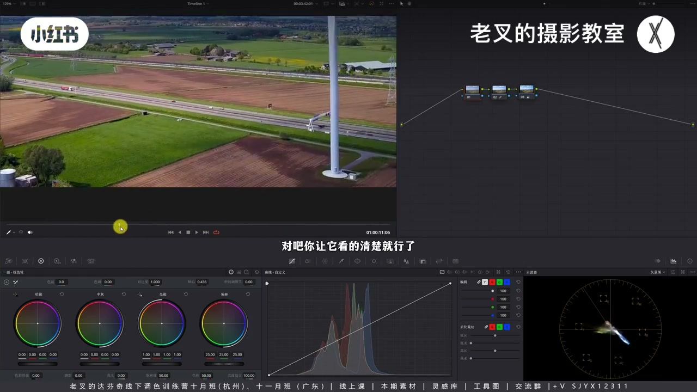
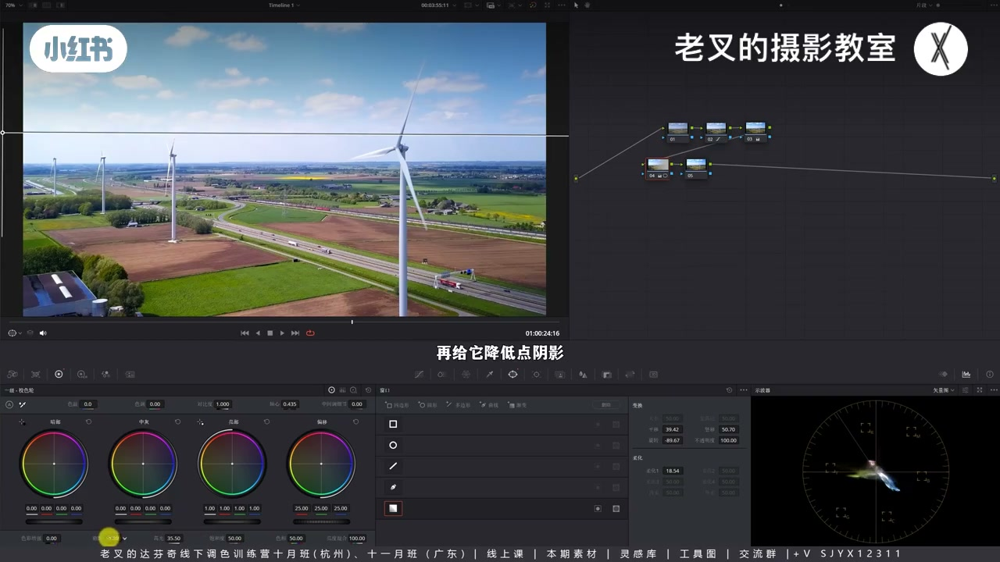
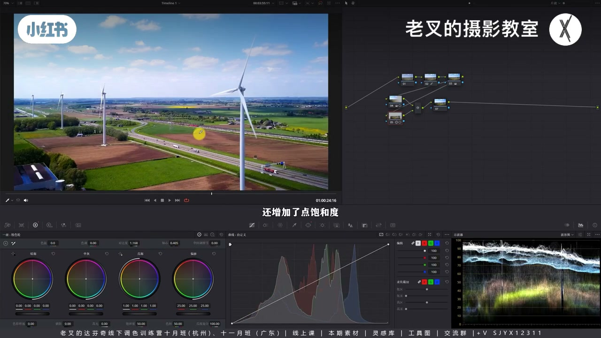
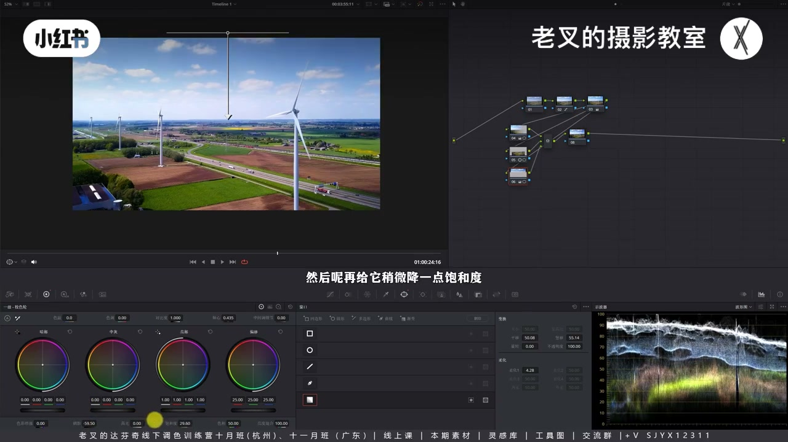
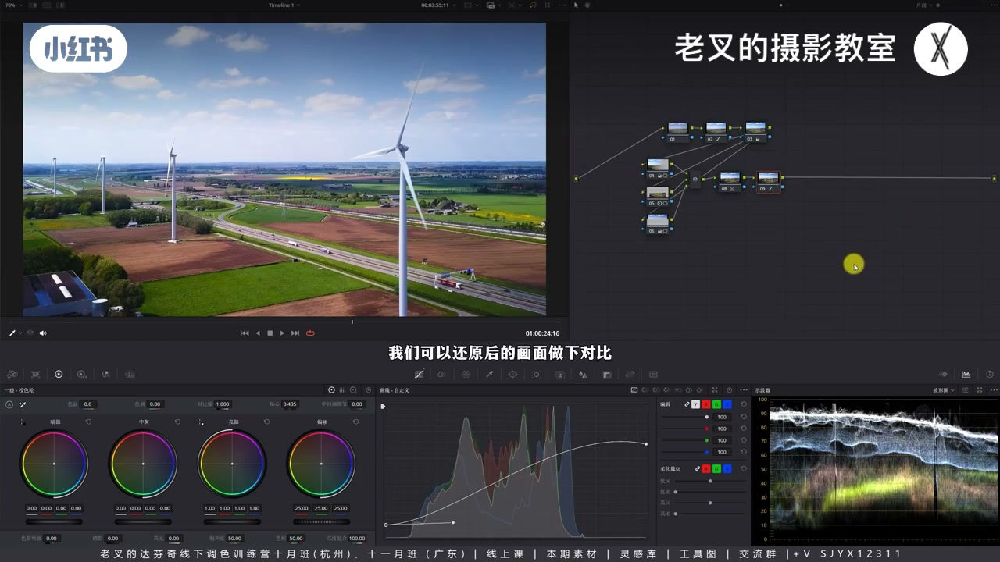

内容要点
宣传片式大场景航拍找不到主体时：还原先让云影等可见；主体风车占比小不宜精抠——先遮幅/二次构图减天空比重，再沿光向渐变提亮高光、压阴影强化光感；并行节点用对比度+轴心压深地面、压天空并加饱和，视线汇中。单靠全局对比度会天空过曝或地面过暗。
知识结构
还原见云影；主体是风车但占比小。
遮幅或放大+上移，减无效天空比重。
左→右渐变；抬高光、压阴影强化风车光与空间。
地面对比度+轴心加深；天空渐变压暗加饱和。
样条线减天空刺眼；外观冲激器可选。
大场景主体太小时，精遮罩不划算：二次构图减无效天空，沿光向渐变强化受光，再并行分区压地面与天空。找光比抠风车更快出质感。
00:00-01:34还原见云影；构图先减天空
朋友航拍找不到主体。宣传片大场景不必精细调色。还原要让地面云影看得清，否则灰蒙还原不到位。主体是风车，但高却占比小，单独精遮罩不现实。
天空无效信息却占比过大：加遮幅并上移，或不接受遮幅则略放大再外轴上移——二次构图后再谈调色。

01:34-02:55找光：渐变强化风车受光
光从左到右：左→右渐变遮罩，抬一级轮高光滑块、略降阴影——提亮强化光，压阴影让地面暗、风车光更明显。风车因更高更近光源而略亮，可与地面区分，不必一上来精遮罩。近暗远亮也带来一点空间感。

02:55-04:27并行：地面加深、天空压抢戏
波形已顶满不能再猛提：并行给地面遮罩，加对比度、轴心略左，加深同时抬饱和（土地要「肥」）。不宜只降曝光把土地弱没。再并行从上往下渐变压天空并加饱和，视线往中汇。
为何不用单节点对比度：只看地好、天空过曝且无层次；护天空则地过暗。三并行很快。

04:27-06:41颜色、柔和对比度与风格可选
可降蓝饱和、调色相让天空少抢戏。柔和对比度用样条线压高光刺眼、抬暗部防死黑——宣传片客户常严控两端。与还原对比质感已明显；电影感外观冲激器等风格可叠可不叠。找不到主体就找光。


完整转录（47段）
以下文本由 Whisper medium 模型自动转录，可能存在少量识别误差，已尽可能修正。
之前有一位朋友给我发了一个视频 大概意思就是说航拍的素材他找不到主体 他不知道该怎么调色
那我一下子找不到那位朋友的留言了哈 所以我就找了一个类似场景的镜头 这个镜头就是我们常说的那种宣传片的一个航拍镜头
那对于这类的东西 我们肯定不会花太多的精力去给他做精细化调色的 那怎么快速出质感呢
那首先先给他做还原 不管你用什么方式都可以 但是还原的度你得掌握 至少你得让地面上的这个云的倒影 对吧
这里我们仔细看啊 这一次他不是有云的影子吗 对吧 你让他看的清楚就行了 不然的话你原本灰蒙蒙的这种云就看的不明显 整体的画面还原就是不到位的啊
那在做好还原了之后呢 我们就要给画面做主次的调整 先做主体 主体是谁 是这些大风车 对吧
但是你说要强化他们单独化制造这肯定不现实 而且他们虽然高 但是在画面中的比重是很小的 那该怎么办呢 首先要先明确 这个画面构图它其实是不舒服的啊
天空它不是有效信息 但是它的比重实在太大了 所以呢 两种方式 第一种方式呢 要么你给他加一个遮浮 然后你在这里面去给他调整 让他外轴就竖移 让他往上一点点
这是一种方式 如果说你整个片子他不接受加遮浮 那么你就只能给他稍微放大一点点 然后再给他在外轴上往上走一点点啊 这种方式也可以 你选一个吧
稍微二次构图了一下之后呢 我们面对这种类型的情况 也就是主体太小的这种情况 第一时间想的肯定是去找光 这个画面的光是从左侧往右侧照射的
如果说我们能够把照射在风车上的光给它强化了 那是不是就能强化主体了 所以这个时候呢 我们从左往右画一个渐变之照
然后再给他提高一级校色轮中的高光滑快 让他的高光能够亮一点 再给他降低一点阴影滑快 那我就到这里差不多 提高高光可以强化光 我们看到这个讲页上他都能够更亮了一点点
但这个不是最重要的 最重要的是压暗阴影 可以让地面暗一点 我们看到是不是把地面压暗了 这个风车上的光也能够强化的更加明显 那在这个时候呢 大家是不是发现了一个问题 你怎么确定得了 地面就可以利用阴影滑快来压暗
那他如果跟风车之间的曝光万一是一个区域呢 这就是我们刚刚说的 风车高了一点 因为它高 所以它会相对亮一点 它离光源更近嘛 对吧 我们调色不会一上来就花大量的时间去做精细化遮罩的
精细化遮罩的一定是想尽办法找到物体和环境之间的区别 利用区别去找对应的工具 那此时呢 我们画面中已经有一定的效果了 而且我们让画面的明暗变化从近到远越来越亮 对吧 那这样的也能让画面带来一点点空间感
但是还不够 我觉得它这个提亮的效果非常一般啊 但是我们看波星都它已经亮到极限了 我们不能再把它提亮了 所以呢 我们就只能去压压压谁先压压地面 我们按照L加P或者是option加P来个并行节点给地面画一个遮罩
画好了遮罩之后呢 我们可以利用对比度和轴心的调整来让地面产生一些变化 我们增加点对比度 然后呢 把轴心向左移动一点点 让它不要压的太狠 这样的一个效果呢 就能让地面变暗的同时还增加了一点饱和度 也就是让它变得深一点 那为什么我们不能直接给它压低曝光呢 我们知道主体是风车 但是地面的这些土地同样是重要的内容 他们也不能弱化太多 对吧 而且土地想要看着肥沃 饱和度一般都是要稍微高一点的 那既然如此呢 我们
不如干脆用一个对比度工具来实现 因为增加对比度的同时会增加饱和度 一举两得 最后呢 就是天空 我们再按照L加P或者是option加P建立一个并行节点
然后给天空去做调整 刚刚说过天空是无效信息 所以呢 我们完全可以从上往下拉一个渐变遮罩
把天空的层次给它稍微做一下调整 也就是压一点点天空
然后呢 再给它稍微加一点饱和度
好 我知道这样就差不多 这样的调整就能够让你的视线往中间去汇聚 对吧 此时我们看画面的变化 这是调整前的画面 这是调整后的画面
是不是开始质感出来了 效果是很明显的 而且操作非常非常简单
那这个时候你说你用三个节点 我用一个节点用对比度就能实现了 我还这么麻烦三个节点去干嘛呢 你用对比度是实现不了的 为什么呢 如果我们增加对比度
你如果只看地面 你发现效果好 但是天空过爆了 而且天空的层次并没有出来 如果说你要让天空保持正确的曝光
那么你就会让地面变得太暗 所以呢 就是不行的 而且这三个并行节点要真的要做的话非常非常快 花不了你多少时间的啊
然后呢 我们再看画面颜色 我会考虑把天空的薄度再次的降低一点点啊 所以我把蓝色薄度降一点 然后让它的色相
调到一个你觉得舒服的一个位置啊 我就到这里差不多
不要让天空太抢戏啊 这是我们的核心目的 最后呢 我们再来一个柔和对比度 也就是打开曲线中的可编辑的样条线这个选项
然后呢 把高光这一段往下降 把高光这里延伸出来的波感往上提
把它的高光恢复到该有的一个高度 然后呢 把暗部这一段往上提 再把暗部延伸出来的波感往下降
好 我就到这差不多 你乍一看好像没什么区别啊
我们做柔和对比度的目的是为了让这个画面中的天空不要太刺眼 因为我们看啊 原本是这样的 它其实是非常非常亮的啊
但你这么亮的天空 你把它一按肯定是不合适的 但一按做不到 我们就给它变灰 我们看到这一块
是不是变灰了
变灰了 它就不会那么刺眼 但又不会破坏掉整体的一个曝光情况 同样的暗部也是一样的 画面中有非常多暗面 这些暗面我不想让它太黑
我不知道大家做过训练片有没有遇到这样的客户 它对你的高光和暗部要求非常非常严格
所以柔和对比度在一个训练片 特别是这种大风光的一个训练片非常好用啊 它不会让你的画面有特别刺眼的部分
那这样的就调好了 我们可以与还原后的画面做下对比 这是还原后的画面 还行 没什么大问题 没什么硬伤 拿出去胶片也没有任何问题
但如果说你想要让它有一点点质感 那就按照我们刚刚那个思路 让它稍微做下调整 对吧
效果是非常明显的 那如果说呢 此时你想来点风格话呢 随便你啊 你要上蜡子也好 用个电影港外观冲动器也行 都可以
比如说我们用电影港外观冲动器放上去 我啥也不动 视频效果也挺好的 冷一点 暖一点 随便你啊 因为我们已经给他做了比较不错
比较到位的一个结果了 你看这样的一个结果不挺好看的吗 对吧
当然啊 这个完全看你自己的需求 你可做可不做 再之后呢 你就要看客户的反馈了 假如说他让你远处的这个地面不要太蓝 那你就建个节点 画个遮罩 降低点它的薄度之类之类的啊
重点是航拍画面 如果你找不到主体 或者主体占比太小
那么就可以考虑找光的这个思路 不知道这样能不能解决之前那位朋友的问题 如果没解决的话 你V我一下 我找不到你的聊天框了 我再给你出一期 这个素材呢 同样可以分享 大家记得领取啊
请到这里 如果你觉得你有帮助的话 还希望多多三连 好了 这期就到这里886